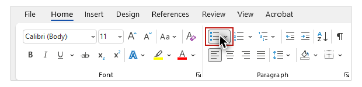
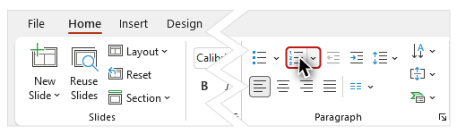
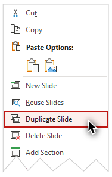
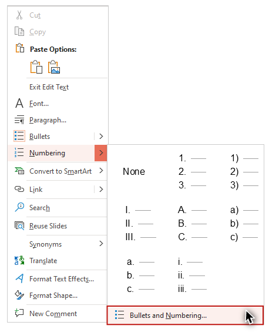
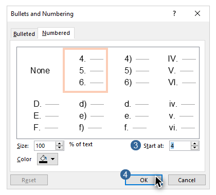
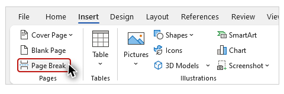
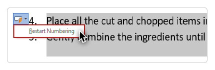
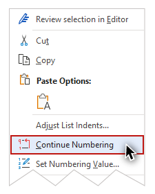

Video
Example Files
Guide
Lists
When used correctly, a list allows groups of items, ideas, or other information to be presented in pieces or steps. The visual presentation and document structure of lists provide benefits for many users.
For users with some types of cognitive and learning disabilities, the visual "space" created by the smaller blocks of text in lists can significantly increase comprehension. Screen reading software users are informed when information is organized as a list. They can easily move between items within a list, and also have the ability to navigate between multiple lists in a document.
Objectives
- Describe the difference between a Bullets list and a Numbering list.
- Identify the processes for creating Bullets and Numbering lists.
- Review how screen reading software users can interact with lists that are identified in a document’s structure.
List Types
In Word and PowerPoint, there are two types of lists: Numbering for groups of items that have a specific order or hierarchy, and bullets for groups of items that don’t.
The process for creating lists is the same on the Windows and Mac operating systems, in Word, and PowerPoint. I'll demonstrate how to create both types of lists by opening the example file in Word for Windows.
The example shows a recipe for making fresh salsa. I’ll copy the content under the “An Unstructured Recipe” heading, and paste it below the “A Structured Recipe” heading. This recipe is currently a large block of text. This text can be optimized by changing its visual presentation and adding some document structure. Specifically, there are two groups of items that should be organized as lists: the ingredients and the steps in the recipe.
When determining which type of list to use, you may want to ask yourself this question:
Would changing the order of the items in a list make a difference?
Bullets
If the answer is no, use a list with Bullets. For instance, in this example changing the order of the ingredients won’t have an impact on being able to successfully complete the recipe’s steps.

To format text as a Bullets list in Word (or PowerPoint), on Windows (or Mac):
-
Place the cursor immediately before the first item in the list.
- Click the Enter key to place the item on its own line.
-
Select Bullets from the HOME tab.

-
Add the remaining items to the list by repeating the process using the cursor and the Enter key.
After I have made my Bullets list, I'll remove any punctuation and words that are no longer needed. The list of ingredients will now be much easier for many users to read and understand. Another approach for creating this list is to place each ingredient on its own line, highlight all of the lines, and then use the Bullets tool to turn each line into a list item.
Numbering
The next group of items in the recipe are steps that need to be completed in a specific sequence, so I’ll use the Numbering tool to create an ordered list.
PowerPoint
I'll open the PowerPoint example file on Windows to demonstrate this. I’ll navigate to Slide 4, where the steps in the recipe are presented as a block of text. I’ll select the block of text, place my cursor in front of the first list item, and on the HOME tab select Numbering.

I will continue to use the cursor and the Enter key to create a paragraph break before each of the remaining list items. I now have individual numbered items for each step. Because the size of this text is too small with all the steps on one slide, I’ll duplicate this slide by right-clicking on its thumbnail and selecting "Duplicate Slide" from the menu.

I'll trim off the last two steps on the original slide, and the first three steps on the duplicate slide.
Continuing Numbering on PowerPoint
Then I'll edit the list's structure so that the list on the second slide starts with the correct item number.

To continue a sequence in a Numbering list in PowerPoint, on Windows (or Mac):
-
Highlight the second list.
-
Right-click and select "Numbering", and then "Bullets and Numbering" from the menus.

-
Adjust the "Start at" value as needed.
-
Click "OK."

As I did before, I will remove any unneeded punctuation and words, and format the steps as sentences by starting them with a capital letter, and ending them with a period.
Word
The process for continuing Numbering on Word is the same, but the interface and terms are different, so I’ll switch back to the Word example.
Continuing Numbering on Word
To demonstrate how to continue numbering, I’ll place each of the steps in the recipe on its own line, and format them to start with capital letters and end with periods. I’ll create a numbered list with the first three steps by highlighting them, navigating to the HOME tab, and selecting Numbering. I’ll insert a page break before the fourth step by placing my cursor in front of it, selecting the INSERT tab on the Ribbon, and selecting the “Page Break” tool.

I’ll highlight the text for steps four and five, click the HOME tab, and select Numbering. To simulate a situation where the numbering on a list did not continue from one page to the next automatically, I’ll click on the “AutoCorrect Options'' tool and select “Restart Numbering”: 
To continue the sequence in a Numbering list in Word, on Windows (or Mac):
-
Highlight the list.
-
Right-click and select "Continue numbering."

Screen Reader Demonstration
To demonstrate the difference that lists with proper structure can make to someone using screen reading software, I'll open NVDA and read the “NVDA Demo” section on the last page of the example file:
[NVDA speaks]
With this simple recipe, you'll be serving up fresh salsa in less than ten minutes! Gather the following ingredients to make salsa for four people:
Bullet - ten roma tomatoes; Bullet - one bunch of green onions; Bullet - two large green peppers; Bullet - one clove of garlic; Bullet - three fresh limes.
Prepare a sharp kitchen knife and a cutting board, and follow these steps:
One - Cut the tomatoes into cubes; Two - Chop the onions, green peppers, and garlic to your desired consistency; Three - Squeeze three limes into a large mixing bowl; Four - Place all the cut and chopped items into the bowl; Five - Gently combine the ingredients until uniformly mixed and coated with lime juice."
[narrator resumes]
Now that you have seen how lists can be used to organize groups of items, and when to use Bullets or Numbering, let's look at another type of visual presentation and document structure—columns.